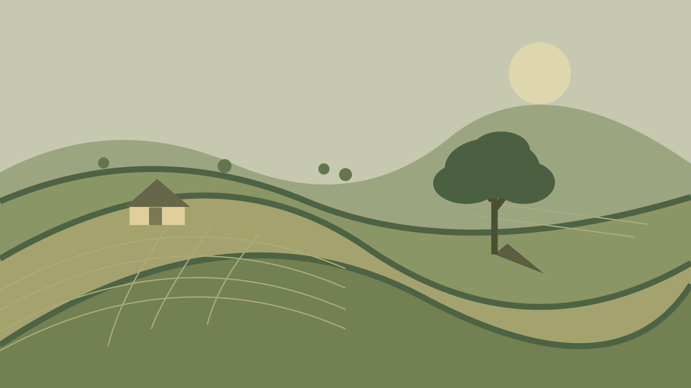

MARLOW HILL
My grandfather took this land on in 1946 with two horses and a debt. We have 140 acres now, about a third of it hedgerow, orchard and rough ground that grows nothing and matters anyway.
We sell nearly everything within twenty miles of the gate. A box on a Thursday, the shop at weekends, and whatever the kitchen at the Green Man takes off us in between.
If you want to know how something was grown, ask. We will tell you honestly, including the year the carrots were a disaster.
Tom Marlow
A fictional farm story supplied in the brief. Illustrations are original; history, produce and schedules are illustrative.
A good time for something.
Picked this month.
Seasonal examples, not a live harvest report.
Good things,
by the box.
Example boxes and prices. Choose one to prepare a local enquiry; no checkout or order is placed.
Come in. See what's good.
FARM SHOP
Original farm-shop illustration.
Nothing from
nowhere.
Nothing matching in this patch.
The same ground.
A different day.
• •
Original seasonal field studies, not documentary photographs.
“The plums taste like the ones I remember, which I had assumed was just me getting older.”
Illustrative quote from the fictional farm brief.
The shop is open,
the kettle usually is too.
Marlow Hill Farm, EardislandHerefordshire HR6 9BT
Fictional farm address. Map searches the village, not a verified farm entrance.
Thursday box collection by arrangement. Confirm all real travel and opening details directly.